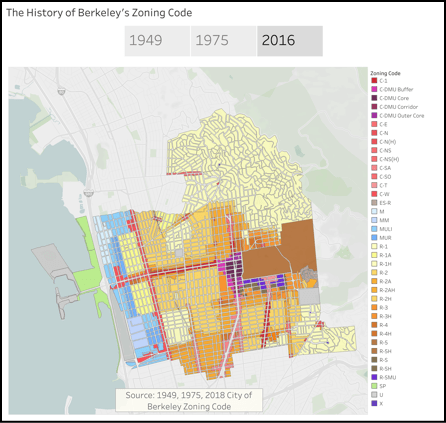
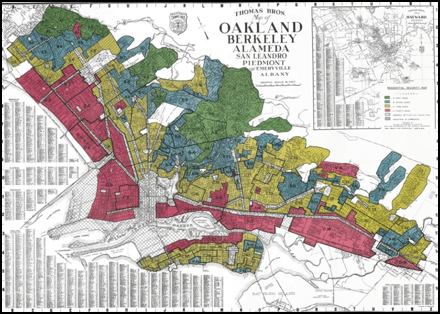
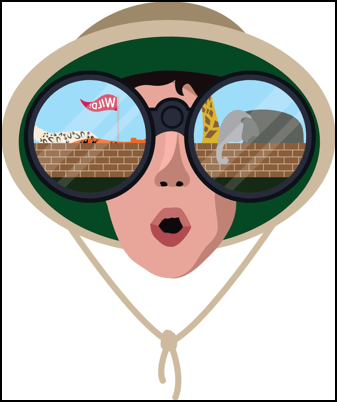
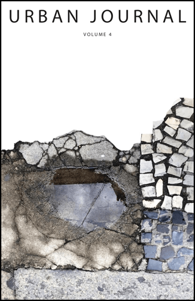

Berkeley zoning has served for many decades to separate the poor from the rich and whites from people of color
City upon a Hill:
A study in the geopolitics of elevation
This article published in Berkeleyside details the racially exclusionary orgins of Berekeley’s zoning code and discussed the effects on the affordable housing crisis.
This article published in the College Hill Independent discuses the role that “the hills” and elevation in general plays in the geopolitics of metropolitan areas. From the Bay Area, to LA, to NYC, the hills carve a unique division in the city’s landscape.

Redlining: The history of Berkeley’s segregated neighborhoods
Everything But the Kitchen Sink: How Modern Monetary Theory reimagines government spending

This article for the College Hill Independent discusses MMT and its applications for the Green New Deal and a Fedreal Jobs Guarentee.
This article published in Berkeleyside details the racially exclusionary housing policies of the 20th century and the way an affordable housing crisis was manufactured.
Top Down: An examination of the tradition of half-staff
This article for the College Hill Independent examines the practice of half staff. In its discussion of the obscure tradition, nationalism, worthy citizenship, and rememberance are explored
ZOO (DYSTOPIA): A walk through the Roger Williams Zoo

Published in the College Hill Independent, this article details the political and colonial history of zoos and the conflicting ethical concerns involed with animal captivity.

Mapping Native Land in California
While treaties in the 19th centuries were used to marginalize native land and their access to emerging infrastructures, native communities managed to carve out resource-rich land despite extreme barriers. During the 20th century, native land has been further marginalized into smaller, more remote, and less productive land, in many ways eroding the valuable land that they managed to secure in treaties.